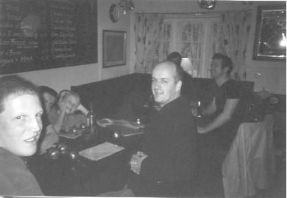
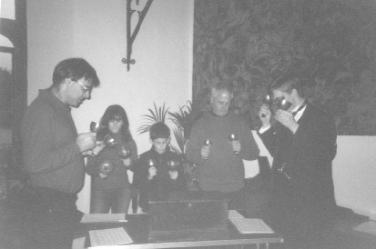
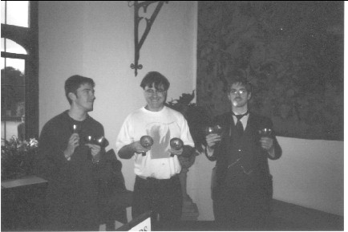

Since repurchase by the Church, the handbells have been rung for the following events:October
2003: Hymns for the Parish Harvest Supper at Leeds - thus saving
payment for entertainment, as the Leeds Society of Handbell Ringers
performed at no charge.
December 2003: Carols at The George Inn, Leeds; The Ten Bells Inn, Leeds; Leeds Castle and The Red Lion Inn, Snargate. Raised £55 
Ringing
the handbells at The George, Leeds
Ringing the Handbells at Leeds
Castle
December 2004: Carols at The George Inn,
Leeds; The Ten Bells Inn, Leeds; Leeds Castle and The Red Lion Inn,
Snargate. Raised £20
The amount raised in 2004 was considerably less, as payment was only received from Leeds Castle.
The music which we use for playing the Hymns and Carols on the bells was all transcribed (and in some cases transposed) very excellently by the Master's mother, Mrs J. Cooper. December 2006: Carols were rung again on the Leeds handbells at The Bell, Ivychurch, The Prince of Wales, New Romney, The Romney Grill on the occasion of the New Romney Parish Church Christmas Supper, The Red Lion Inn in Snargate, and outside The George Inn, Leeds, Over £40 was raised for the Church, exclusive of the Carol Singing at the George in Leeds, where a large quantity of money was raised, but this was not included in the monies handed to the PCC for repayment of the handbell loan. December 2007: Carols were rung on the Leeds handbells at The Red Lion, Snargate and The Prince of Wales New Romney on 20th December. This followed a very convivial practice at the home of David Jackson, New Romney Tower Captain. Four of the ten carols in our repertoire were recorded on video, and these appear below: O Little Town of Bethlehem Once in Royal David's City Christians Awake Away in a manger |